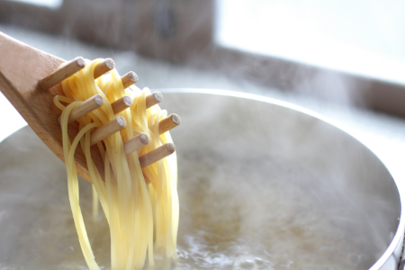

今月のメニュー
イタリア風トマトスパゲッティ
20分で、簡単に包丁を使わずにできるパスタです。
トマトベースで酸味があり、パセリで爽やかさに味わうことができる
材料(2人前〜３人前)/20分
トマト ３つ
パスタ ２束
にんにく １欠
オリーブオイル 適量
パセリ １つ
塩 適量
水 適量
カットトマト １缶
コンソメ 適量
作り方
1
水に塩を入れて
ひとにたちしたら
パスタを入れる。

2
トマトソースの作成
トマトを切り、カット
トマトを入れて
塩・オリーブオイルを入れる。
3
1がアルデンテになったら
2のソースと混ぜておく
4
1分から2分前ひと煮たち
完成